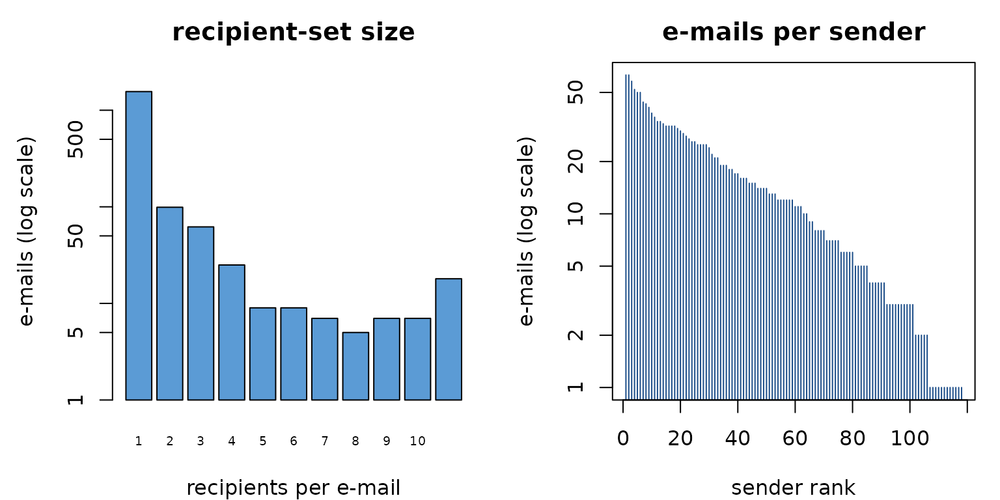
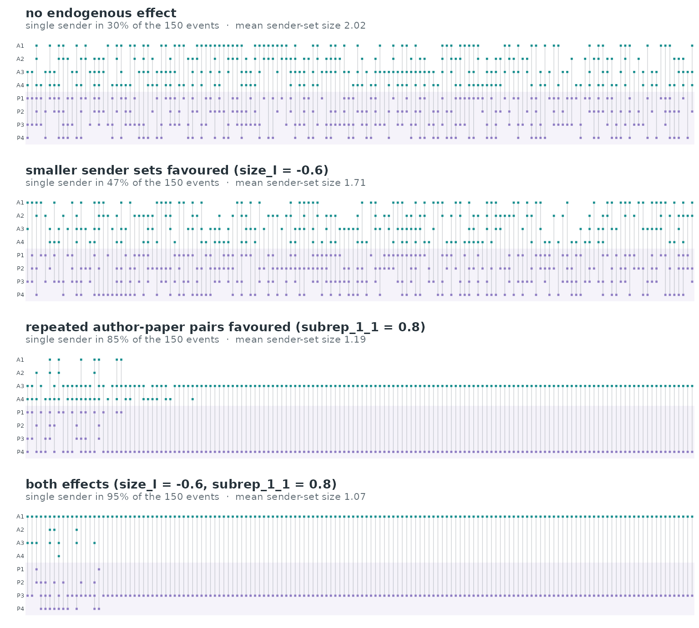
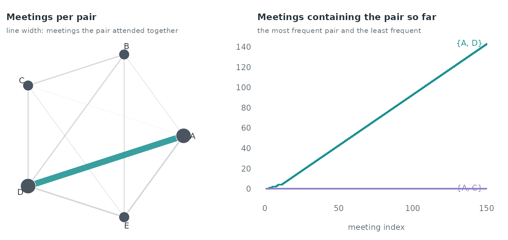
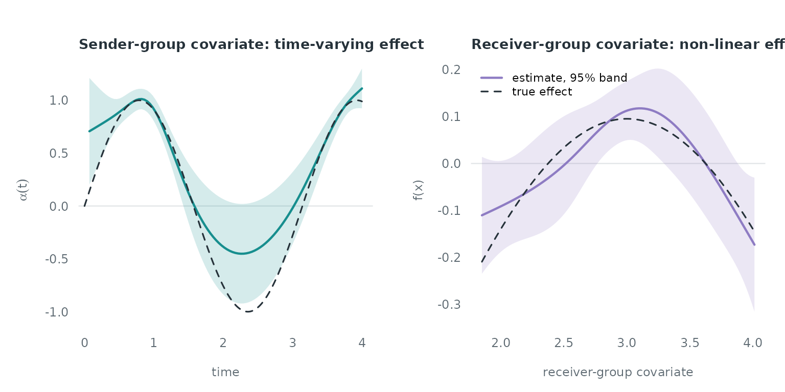

Hyperedge models
amorem supports relational hyper event
models (RHEMs), the extension of REMs from dyadic
(sender, receiver, time) events to set-valued
(I, J, time) hyperedges, where I is a set of
senders and J is a set of receivers. Following Boschi, Lerner & Wit
(2025), a single event can involve several actors per axis: a paper
authored by a co-author set citing a set of references, an e-mail sent
to several recipients at once, or a multi-actor meeting
(J = ∅). The code on this page runs when the page is
built.
Data model
hl <- hyperedge_log(
I = list(c("alice", "bob"), c("alice", "carol"), c("bob", "carol")),
J = list(c("paperA"), c("paperA", "paperB"), c("paperB")),
time = c(1.0, 2.5, 4.0))
is_hyperedge_log(hl)
#> [1] TRUE
hyperedge_sizes(hl)
#> I J time size_I size_J
#> 1 alice, bob paperA 1.0 2 1
#> 2 alice, carol paperA, paperB 2.5 2 2
#> 3 bob, carol paperB 4.0 2 1| Function | Purpose |
|---|---|
hyperedge_log(I, J, time) |
Validating constructor; sorts by time |
is_hyperedge_log(x) |
Structural predicate |
as_hyperedge_log(event_log) |
Promote a dyadic log (each row becomes a singleton on each axis) |
as_dyadic_log(h) |
Inverse; succeeds only when |I| = |J| = 1 on every
row |
hyperedge_sizes(h) |
Adds size_I and size_J columns |
A dyadic log and its hyperedge form convert into each other:
dy <- data.frame(sender = c("a", "b"), receiver = c("b", "c"), time = c(1, 2))
h <- as_hyperedge_log(dy)
h$I
#> [[1]]
#> [1] "a"
#>
#> [[2]]
#> [1] "b"
as_dyadic_log(h)
#> sender receiver time
#> 1 a b 1
#> 2 b c 2
try(as_dyadic_log(hl)) # rows with two senders are not dyadic
#> Error in as_dyadic_log(hl) :
#> Cannot convert to a dyadic log: 3 event(s) have non-singleton sender or receiver sets.For undirected hyperevents (e.g. multi-actor
meetings), pass J = list(character(0), ...) and use the
actor-only simulator below.
Subset repetition
The hyperedge-native covariates of the paper (eq. 3-4) count how
often parts of a focal hyperedge have occurred together before time
t:
# past events containing both {alice, bob} and {paperA}
hyperedge_activity(hl, I = c("alice", "bob"), J = "paperA", t = 5)
#> [1] 1
# share-weighted repetition over the size-2 subsets of I, paired with paperA
hyperedge_subrep(hl, I = c("alice", "bob", "carol"), J = "paperA",
t = 5, rho = 2, l = 1)
#> [1] 0.6666667hyperedge_subrep(rho, l) averages, over all sender
subsets of size rho and receiver subsets of size
l, the number of past events that contain both subsets. For
dyadic events with |I| = |J| = 1,
rho = 1, l = 1 is the count of past events on the same
dyad.
Feature engine
hyperedge_features() is the hyperedge analogue of
endogenous_features(). It evaluates each statistic at every
row of the log, using the events strictly before that row:
hyperedge_features(hl, stats = c("activity", "subrep_1_1", "subrep_2_1"))
#> I J time activity subrep_1_1 subrep_2_1
#> 1 alice, bob paperA 1.0 0 0.00 0
#> 2 alice, carol paperA, paperB 2.5 0 0.25 0
#> 3 bob, carol paperB 4.0 0 0.50 0| Stat name | Meaning |
|---|---|
"activity" |
hyperedge_activity() on each row’s
(I, J)
|
"subrep_<rho>_<l>" |
directed subset repetition (NA when the row has fewer
than rho senders or l receivers) |
"subrep_<rho>" |
undirected subset repetition (l = 0) |
| a name from the dyadic catalogue | delegated to endogenous_features() after
as_dyadic_log(); requires every row to be dyadic |
Case study · multi-recipient e-mail
In radoslaw_email (internal e-mail of a manufacturing
company), an e-mail sent to several recipients appears as one row per
recipient with the same sender and time stamp. Grouping the rows by
sender and time gives a directed hyperevent: I = {sender},
J = {recipients}. We use the first 7 days.
data(radoslaw_email)
x <- radoslaw_email[radoslaw_email$time < 7 &
radoslaw_email$sender != radoslaw_email$receiver, ]
key <- paste(x$sender, x$time)
first <- !duplicated(key)
J_sets <- lapply(split(as.character(x$receiver),
factor(key, levels = unique(key))), unique)
email_hl <- hyperedge_log(I = as.list(as.character(x$sender[first])),
J = unname(J_sets), time = x$time[first])
email_hl <- hyperedge_sizes(email_hl)
c(rows = nrow(x), hyperevents = nrow(email_hl),
multi_recipient = sum(email_hl$size_J > 1),
actors = length(unique(c(x$sender, x$receiver))))
#> rows hyperevents multi_recipient actors
#> 2794 1808 248 142
op <- par(mfrow = c(1, 2), mar = c(4, 4.5, 2.5, 1))
tab <- table(pmin(email_hl$size_J, 11))
names(tab)[names(tab) == "11"] <- "11+"
barplot(tab, log = "y", col = "#5b9bd5", xlab = "recipients per e-mail",
ylab = "e-mails (log scale)", main = "recipient-set size",
ylim = c(1, 2 * max(tab)), cex.names = 0.6)
per_sender <- sort(table(unlist(email_hl$I)), decreasing = TRUE)
plot(seq_along(per_sender), as.numeric(per_sender), log = "y", type = "h",
col = "#1d4e89", xlab = "sender rank", ylab = "e-mails (log scale)",
main = "e-mails per sender")
par(op)Of the 1,808 e-mails, 248 (14%) have more than one recipient; they account for 44% of the 2,794 rows of the dyadic log. The largest recipient set has 135 members.
The single-recipient e-mails form an ordinary dyadic log again, so the dyadic catalogue applies to them directly:
single <- email_hl[email_hl$size_J == 1, c("I", "J", "time")]
class(single) <- class(email_hl)
dy_single <- as_dyadic_log(single)
head(endogenous_features(dy_single, stats = c("reciprocity_count", "recency")), 3)
#> sender receiver time reciprocity_count recency
#> 1 18 19 1.499028 0 NA
#> 2 18 19 1.499595 0 0.0005671296
#> 3 20 3 1.519433 0 NAA size-matched case-control fit
amorem does not yet sample non-events for hyperevents,
so the case-control design is built here by hand: for each e-mail, one
control hyperedge with the same number of recipients, a sender drawn
uniformly from the actors and a recipient set drawn uniformly from the
other actors (matching on cardinality, as in Section 3.3 of the paper).
Three statistics are evaluated for the event and the control at the
event’s time, from the e-mails strictly before it:
-
sender activity: past e-mails from the sender
(
hyperedge_subrep(rho = 1, l = 0)); -
repetition: past e-mails from the sender to each
recipient, averaged over the recipients
(
hyperedge_subrep(rho = 1, l = 1)); -
reciprocity: past e-mails from each recipient to
the sender, averaged over the recipients
(
hyperedge_activity()with the roles swapped).
hstats <- function(I, J, t) c(
sender_activity = hyperedge_subrep(email_hl, I, J, t, rho = 1, l = 0),
repetition = hyperedge_subrep(email_hl, I, J, t, rho = 1, l = 1),
reciprocity = mean(vapply(J, function(j)
hyperedge_activity(email_hl, I = j, J = I, t = t), 0)))
set.seed(11)
actors <- sort(unique(c(unlist(email_hl$I), unlist(email_hl$J))))
rows <- lapply(seq_len(nrow(email_hl)), function(i) {
I <- email_hl$I[[i]]; J <- email_hl$J[[i]]; t <- email_hl$time[i]
s_c <- sample(actors, 1)
J_c <- sample(setdiff(actors, s_c), length(J))
rbind(data.frame(stratum = i, event = 1L, t(hstats(I, J, t))),
data.frame(stratum = i, event = 0L, t(hstats(s_c, J_c, t))))
})
cc <- do.call(rbind, rows)
for (v in c("sender_activity", "repetition", "reciprocity"))
cc[[paste0("log_", v)]] <- log1p(cc[[v]])
w <- widen_case_control(cc, covariates = c("log_sender_activity",
"log_repetition", "log_reciprocity"))
fit <- rem(~ log_sender_activity + log_repetition + log_reciprocity,
data = w, method = "gam")
est <- summary(fit)$p.table[, c("Estimate", "Std. Error")]
round(est, 3)
#> Estimate Std. Error
#> log_sender_activity 0.481 0.077
#> log_repetition 1.525 0.268
#> log_reciprocity 3.539 0.252All three statistics enter on the log(1 + count) scale.
Holding the other two fixed, the log-rate of an e-mail changes by 0.48
(standard error 0.08) per unit of sender activity, by 1.52 (s.e. 0.27)
per unit of repetition and by 3.54 (s.e. 0.25) per unit of reciprocity.
A control is drawn from all actor sets of the same size, so these
coefficients compare each e-mail with an arbitrary hyperedge of its
size; a design that also matches on the sender would isolate the
recipient-side effects.
Two-mode directed simulator
For citation-style data (Boschi et al. 2025 Section 5),
simulate_directed_hyperedge_events() draws sender and
receiver sets from two actor pools. Supported endogenous statistics:
"size_I", "size_J", "activity",
"subrep_<rho>_<l>". A 150-event sweep on 4
senders × 4 receivers, varying the endogenous terms one at a time:
specs <- list(
"no effect" = c(),
"size_I = -0.6" = c(size_I = -0.6),
"subrep_1_1 = 0.8" = c(subrep_1_1 = 0.8),
"both" = c(size_I = -0.6, subrep_1_1 = 0.8))
sims <- lapply(specs, function(eff) {
set.seed(2)
simulate_directed_hyperedge_events(
n_events = 150, senders = paste0("author", 1:4),
receivers = paste0("paper", 1:4), max_size_I = 3, max_size_J = 3,
baseline_rate = 0.3,
endogenous_stats = if (length(eff)) names(eff) else NULL,
endogenous_effects = if (length(eff)) eff else NULL)
})
sizes <- lapply(sims, hyperedge_sizes)
sweep <- data.frame(
mean_size_I = vapply(sizes, function(s) mean(s$size_I), 0),
mean_size_J = vapply(sizes, function(s) mean(s$size_J), 0),
share_I_1 = vapply(sizes, function(s) mean(s$size_I == 1), 0))
round(sweep, 2)
#> mean_size_I mean_size_J share_I_1
#> no effect 2.02 1.91 0.30
#> size_I = -0.6 1.71 2.07 0.47
#> subrep_1_1 = 0.8 1.19 1.14 0.85
#> both 1.07 1.10 0.95
counts <- sapply(sizes, function(s) table(factor(s$size_I, levels = 1:3)))
barplot(counts, beside = TRUE, col = c("#1d4e89", "#5b9bd5", "#bcd4ec"),
ylab = "events", xlab = "specification",
legend.text = paste("|I| =", 1:3),
args.legend = list(x = "topleft", bty = "n"))
With no endogenous effect, 30% of the events have a single sender. A
negative size_I effect raises that share to 47%; a positive
subrep_1_1 effect raises it to 85%, since it reinforces the
sender-receiver pairs that have already occurred; both effects together
give 95%.
The simulator enumerates every candidate (I, J) for
every event, so the cost per event grows exponentially with the actor
pools; it is practical for small universes (about 10 actors per side,
max_size ≤ 3).
Undirected meeting simulator
For undirected multi-actor meetings (Section 4 of the paper),
simulate_hyperedge_events() enumerates every subset of
actors of size min_size..max_size, scores each
from the event history, draws an event proportional to its exponentiated
score, and waits an exponential time with rate equal to the total score.
The output is a hyperedge log with empty receiver sets.
set.seed(5)
meet <- simulate_hyperedge_events(
n_events = 150,
actors = LETTERS[1:5],
max_size = 3,
baseline_rate = 0.3,
endogenous_stats = c("subrep_2", "size"),
endogenous_effects = c(subrep_2 = 0.6, size = -0.3))
pairs <- utils::combn(LETTERS[1:5], 2, simplify = FALSE)
pair_counts <- vapply(pairs, function(p)
hyperedge_activity(meet, I = p, t = Inf), 0)
names(pair_counts) <- vapply(pairs, paste, "", collapse = "")
top <- names(which.max(pair_counts))
sort(pair_counts, decreasing = TRUE)[1:4]
#> AD AE DE BC
#> 143 4 4 3
other <- names(sort(pair_counts))[1]
running <- function(p) cumsum(vapply(meet$I, function(Im)
all(strsplit(p, "")[[1]] %in% Im), logical(1)))
label <- function(p) paste0("{", paste(strsplit(p, "")[[1]], collapse = ", "), "}")
plot(seq_len(nrow(meet)), running(top), type = "s", lwd = 2, col = "#d62728",
xlab = "meeting index", ylab = "meetings containing the pair so far",
ylim = c(0, max(pair_counts)))
lines(seq_len(nrow(meet)), running(other), type = "s", lwd = 2, col = "#1d4e89")
legend("topleft", bty = "n", lwd = 2, col = c("#d62728", "#1d4e89"),
legend = c(label(top), label(other)))
With subrep_2 = 0.6, a pair that meets is more likely to
meet again. Of the 150 meetings, 143 contain the pair {A, D}, and 0
contain the pair {A, C}.
Time-varying and non-linear effects on hyperevents
simulate_directed_hyperevents_tvnl() simulates directed
hyperevents between groups of senders and groups of receivers, where a
group’s covariate is the mean of its members’ attributes. The
sender-group covariate has a time-varying effect
and the receiver-group covariate a non-linear effect
.
It returns a case-control table, which widen_case_control()
and rem() fit with tv() and nl()
terms:
set.seed(1234)
sa <- setNames(rnorm(4, 5, 1.5), paste0("S", 1:4))
ra <- setNames(rnorm(4, 3, 2.0), paste0("R", 1:4))
d <- simulate_directed_hyperevents_tvnl(sa, ra, horizon = 4, n_controls = 1)
table(d$event)
#>
#> 0 1
#> 3505 3505
wd <- widen_case_control(d, stratum = "event_id",
covariates = c("cov_sender", "cov_receiver", "event_time"))
fit_tvnl <- rem(~ tv(cov_sender, k = 6) + nl(cov_receiver, k = 6),
data = wd, method = "gam", time = "event_time")
truth <- attr(d, "truth")
op <- par(mfrow = c(1, 2), mar = c(4, 4.5, 2.5, 1))
plot(fit_tvnl$fit, select = 1, rug = FALSE, scale = 0,
xlab = "time", ylab = expression(alpha(t)), main = "time-varying effect")
tg <- seq(0, truth$horizon, length.out = 200)
lines(tg, truth$time_varying_effect(tg), col = "#d62728", lwd = 2, lty = 2)
plot(fit_tvnl$fit, select = 2, rug = FALSE, scale = 0,
xlab = "receiver-group covariate", ylab = "f(x)", main = "non-linear effect")
xg <- seq(min(d$cov_receiver), max(d$cov_receiver), length.out = 200)
fx <- truth$nonlinear_effect(xg)
lines(xg, fx - mean(fx), col = "#d62728", lwd = 2, lty = 2)
par(op)Solid lines are the estimates with ±2 standard-error bands, dashed red lines the true effects; the non-linear effect is identified up to an additive constant, so its truth is drawn centred.
Smooth effects on hyperedge features
Once features are computed on a case-control table, linear,
tv(), nl() and tvnl()
specifications are fitted with rem() as for dyadic data —
see Estimation. The case-control
likelihood is equation 8 of Boschi et al. (2025).